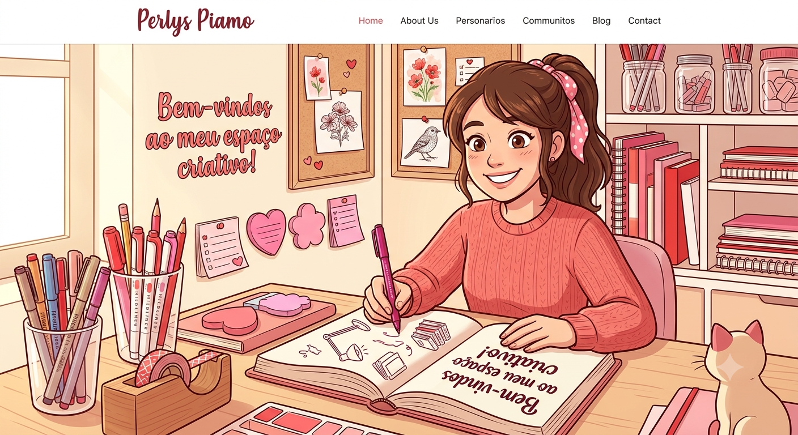
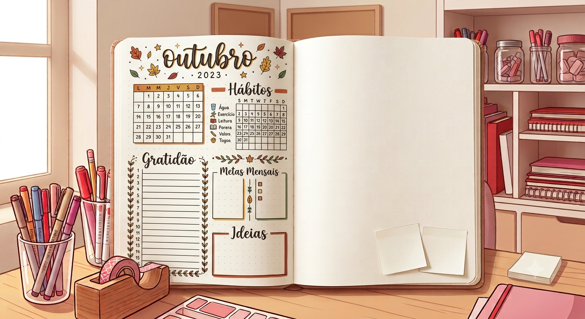
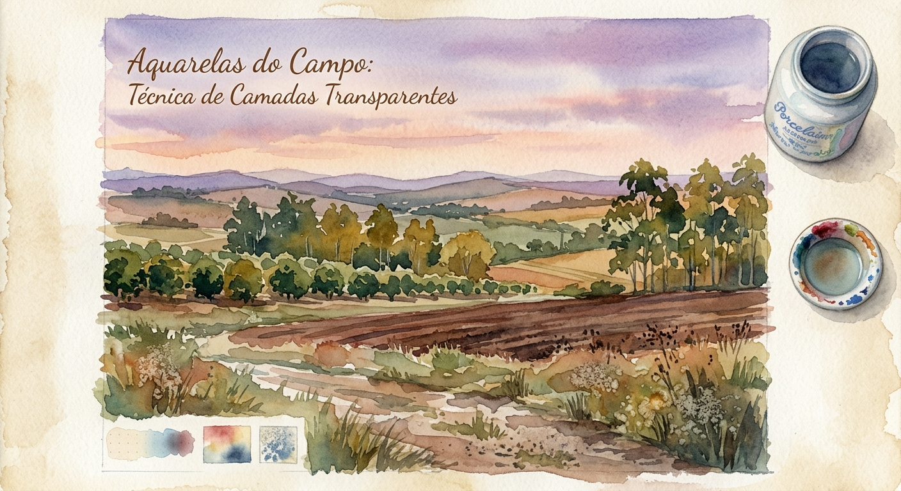
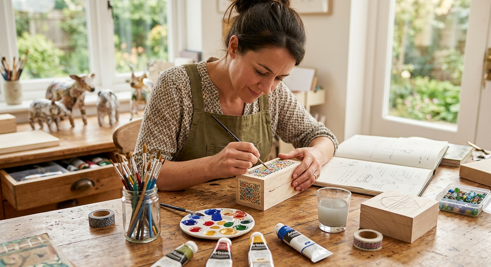

Bem-vindos ao meu espaço criativo!
Por: Perlys Piamo
Seja muito bem-vindo ao meu novo blog! Aqui é o lugar perfeito para quem ama cadernos novos, canetas coloridas e processos artísticos.
Inspirações, truques de organização, desenhos e projetos DIY

Por: Perlys Piamo
Seja muito bem-vindo ao meu novo blog! Aqui é o lugar perfeito para quem ama cadernos novos, canetas coloridas e processos artísticos.

Por: Perlys Piamo
O Bullet Journal é uma mistura de agenda e diário. Não se assuste com padrões das redes sociais! Use folhas simples e cores para destacar tarefas.

Por: Perlys Piamo
A pintura em aquarela é mágica. Minha dica principal: compre papéis com gramatura de 300g/m² para segurar a água sem enrugar.

Por: Perlys Piamo
Recicle potes de vidro antigos aplicando tintas spray rosa ou vermelha. Eles servem como ótimos porta-pincéis decorativos na escrivaninha.